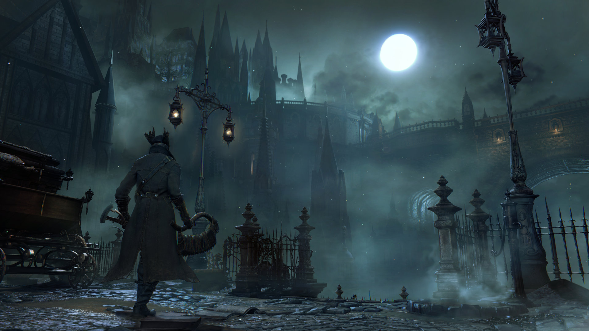
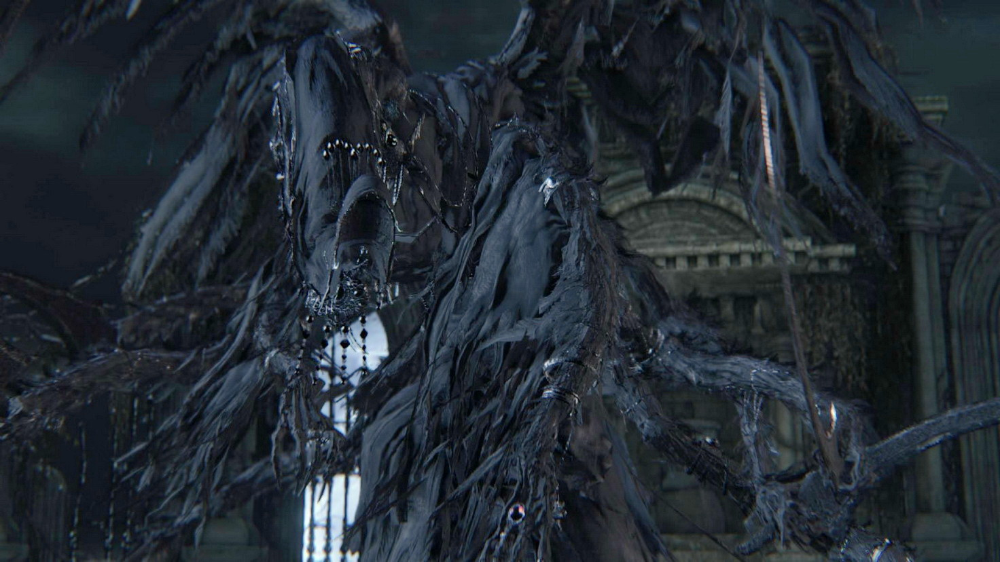
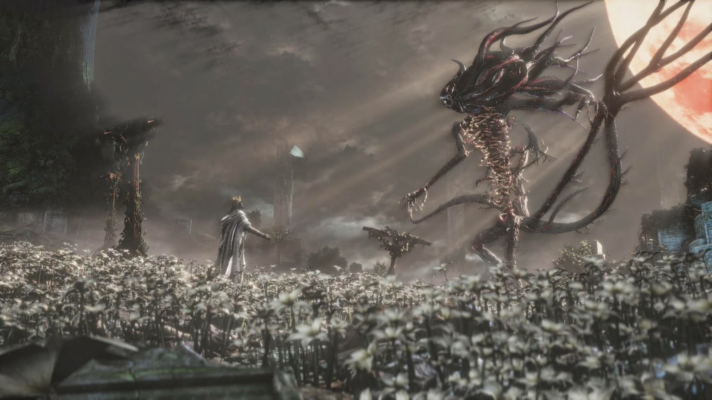
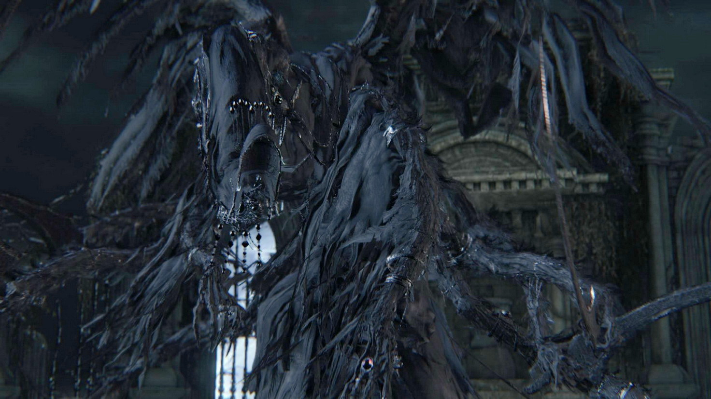
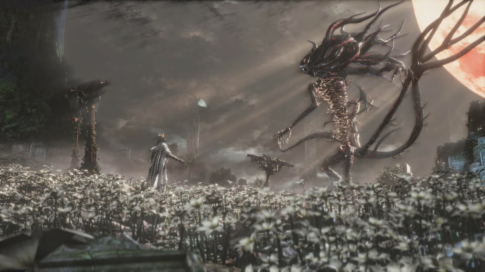
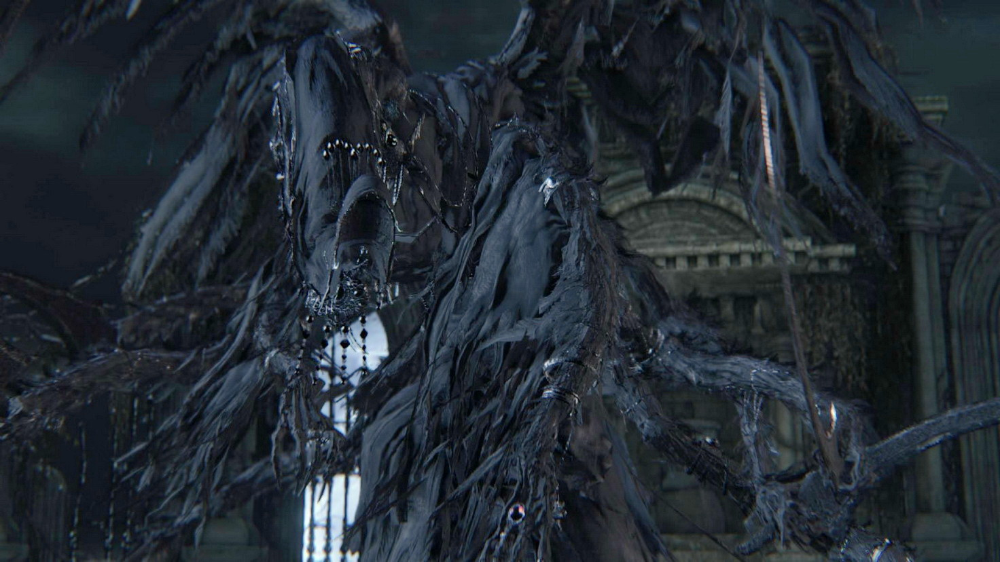
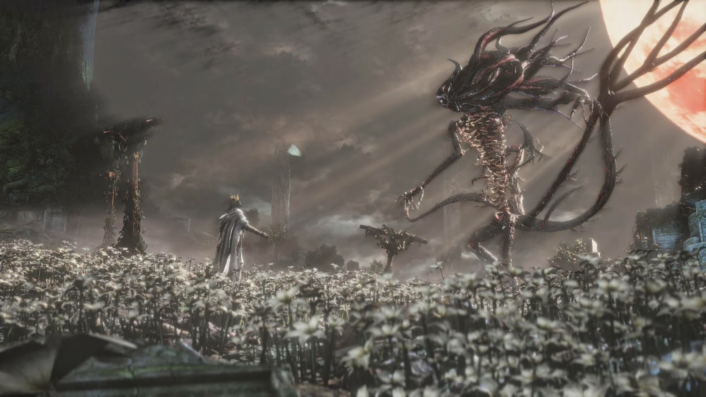

At the beginning of the game,the player chooses a starting class, known as an "Origin", which provides a basic backstory for the Hunter and sets the player's starting attributes.The player can return to the safe zone, known as the "Hunter's Dream", by interacting with lanterns spread throughout the world of Yharnam. Doing so replenishes health, but repopulates all enemies in the game world. Lanterns also serve as the game's checkpoints; the player will return to the last activated lantern when they die. Players may purchase helpful items, such as weapons, clothing and consumables, from the Messengers using Blood Echoes or Insight, level up their character by talking to the Doll, or upgrade their weapons in the workshop, among other things. Unlike Yharnam and all other locations in the game, the Hunter's Dream is considered completely safe as it is the only location in the game not to feature enemies.
Combat is fast-paced and requires an offensive approach in order for the player to combat dense hordes of enemies. The player character is agile and can dodge attacks by strafing around enemies while locked on. The new risk-and-reward style of gameplay is emphasized through Bloodborne's Rally system, which allows the player to recover portions of lost health by striking an enemy within a small window of time.
The player may only wield two melee weapons and two secondary weapons at one time. Most melee weapons, called Trick Weapons, can transform into an alternate state; each state encourages a different approach to combat.The player's main secondary weapon is a firearm; the firearm, usually a pistol, can be used in a traditional sense, as well as a way to stun enemies. When an enemy is stunned, the player can perform a Visceral attack; Visceral attacks cause a large amount of damage in one hit and can also be performed after the player strikes an enemy from behind with a charged attack.
Plot
The player character, a Hunter, sees that an old man is operating on them. The man explains that he is performing a blood transfusion to allow the player to sign a "contract", and mentions a mysterious condition referred to as Paleblood.He warns the Hunter that they will go on a strange journey that may seem like a bad dream. The screen goes dark, then returns to the operating table as a large, flesh-torn beast rises from the floor and extends a claw towards the immobile Hunter. Suddenly fire appears and forces the beast's retreat; little creatures ("Messengers") begin to crawl over the Hunter, and the screen then cuts to black. After the player completes character creation, the Hunter awakens on an operating table in a different clinic in Yharnam.
Shortly after their arrival, the player finds their first lantern, which, when lit, transports them to a spectral realm called the Hunter's Dream.The player encounters two non-player characters: Gehrman, an elderly man who uses a wheelchair, provides advice, and the Doll, a life-sized living doll that assists the player in leveling up. Gehrman informs the player that to obtain the blood they seek and escape the dream, they must hunt down the beasts plaguing Yharnam and halt the source of the plague.
While travelling through Central Yharnam, the second area, another non-player character tells the Hunter to seek out the Healing Church because of their connection to blood ministration, which is linked to the plague.The player encounters a hunter named Father Gascoigne, who seeks to kill the player to prevent them from transforming into a beast, but transforms into a monster himself midway through the fight. The Hunter moves through to the Cathedral Ward and enters the Grand Cathedral and encounters Vicar Amelia, now a massive beast. The Hunter comes into contact with an artifact that bids them to visit a place called Byrgenwerth, only accessible through an area known as the Forbidden Woods. Arriving at Byrgenwerth after defeating three enemies known as the Shadows of Yharnam, the Hunter slays Rom, a cosmic kin. With Rom's death, the Hunter gains access to a higher degree of perception and sees Queen Yharnam, an ancient being from the dead civilization who supposedly bore Mergo, the source of the Nightmare. With their new perception, the Hunter can venture to the previously hidden village of Yahar'gul, where the now-visible Great Ones reside to be researched and worshipped by the School of Mensis. The scholars sought to build a vessel for a Great One, known as The One Reborn. After defeating it, the player accesses the spectral realm called the Nightmare of Mensis, where they discover the insane head of the scholars, Micolash. After killing him, the player encounters Mergo and their guardian, referred to as Mergo's Wet Nurse. After slaying Mergo's Wet Nurse and letting Mergo die, the game's final phase is initiated. When the Hunter returns to the Hunter's Dream, Gehrman offers to free the player from the dream and return them to the waking world in the morning.
At this point, three different endings are possible depending on the player's actions.



.jpg "Vicar Amelia") 


